“Quero exaltar a beleza dessa pintura feita ao vivo na cerimônia do nosso casamento. Foi exatamente assim… Laura, você é perfeita no que faz. Vou guardar para sempre.”
Marina Albernaz
Live Wedding Painting · Brasília · desde 2011
Sua cerimônia pintada à mão, ao vivo, diante dos seus convidados, e pendurada na sua parede antes do fim da noite.
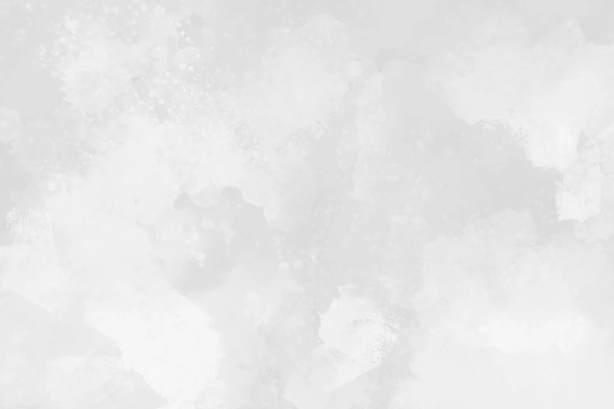
A obra
Enquanto os votos são ditos, uma tela em branco começa a receber tudo aquilo: a luz da cerimônia, o volume do vestido, as flores do altar, a curva dos braços dele ao redor dela. Camada por camada, ao vivo.
Ao fim da recepção, as flores se despedem. A obra vai para casa com vocês: assinada, seca e pronta para atravessar gerações.
“Não entregamos somente uma pintura, mas uma experiência única.”
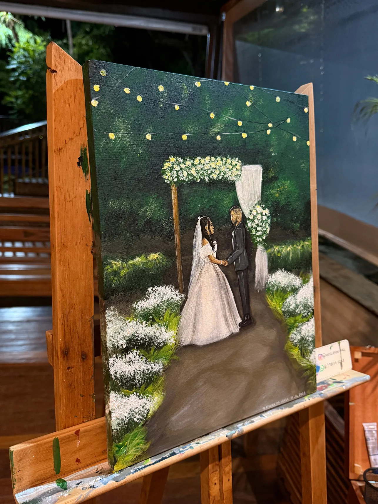
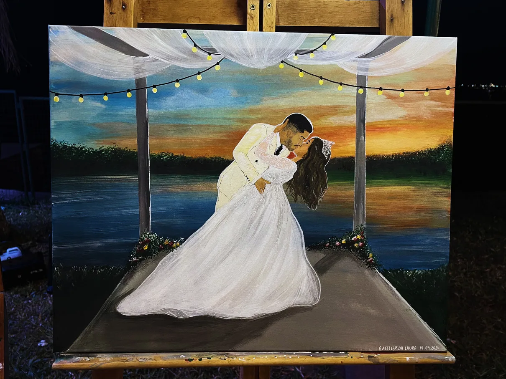
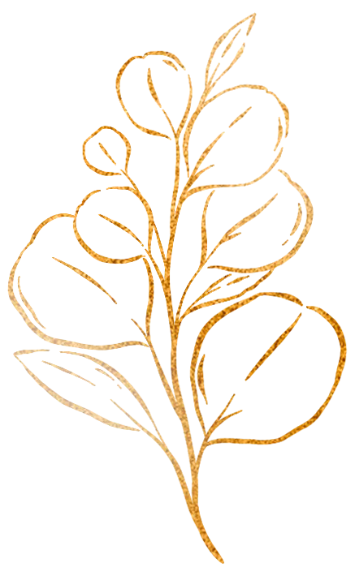
Cerca de 5 horas de pintura, iniciadas na cerimônia e concluídas durante a recepção, entregues aos noivos na mesma noite.
Conversamos sobre a data, o espaço, a luz e o instante que vocês querem guardar para sempre.
Estudo de composição, paleta e enquadramento, alinhados à decoração e à arquitetura do lugar.
Discreta e elegante, começa na cerimônia. Os convidados voltam ao cavalete a noite inteira.
Tinta acrílica, sem odor forte, seca em cerca de 2 horas. A tela é entregue em mãos, ainda na festa.
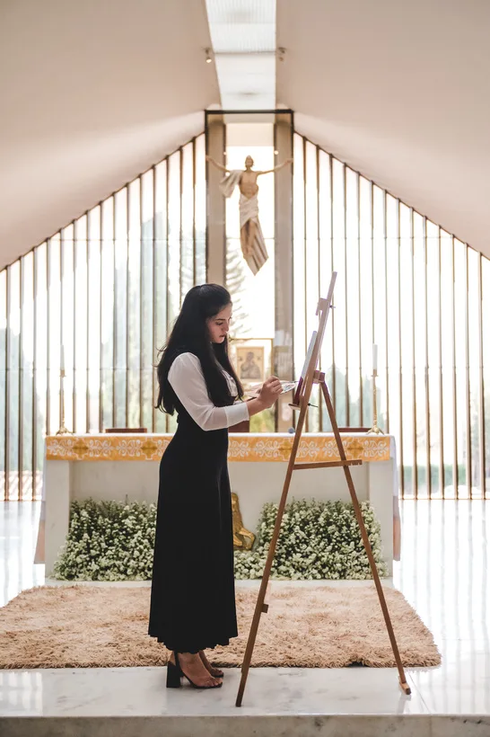
Um casamento acontece em um único dia. A obra permanece por gerações.
Acervo
Casamentos, murais e arte corporativa. Cada peça pintada à mão, uma única vez.
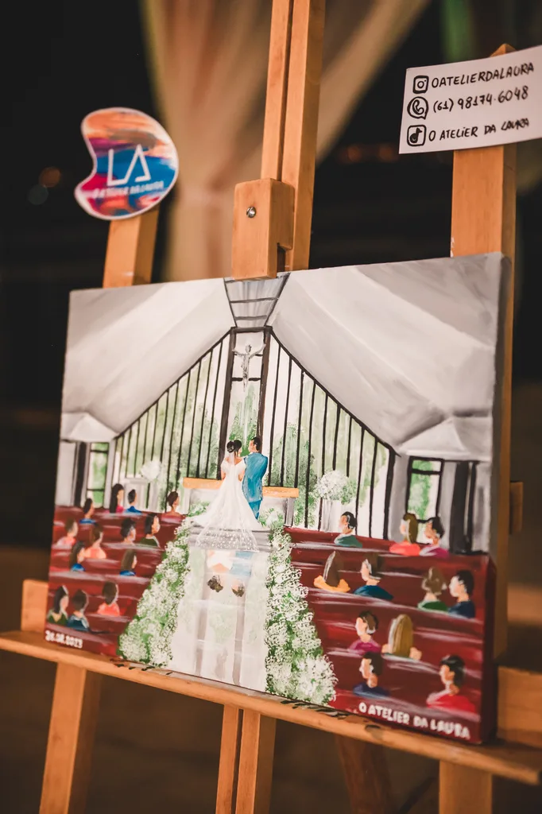
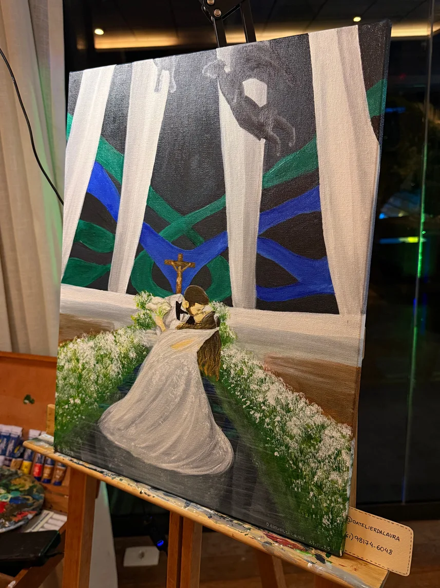
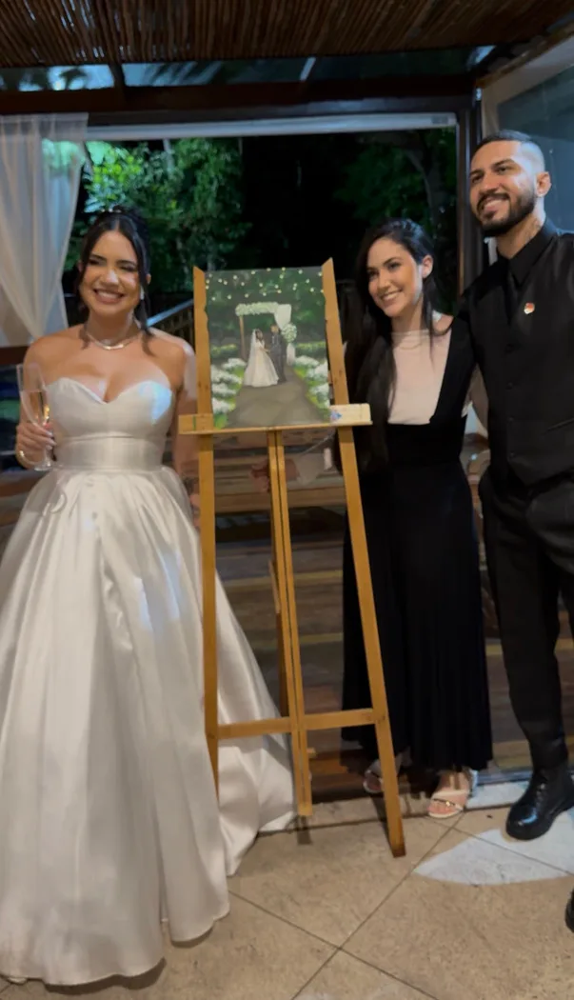
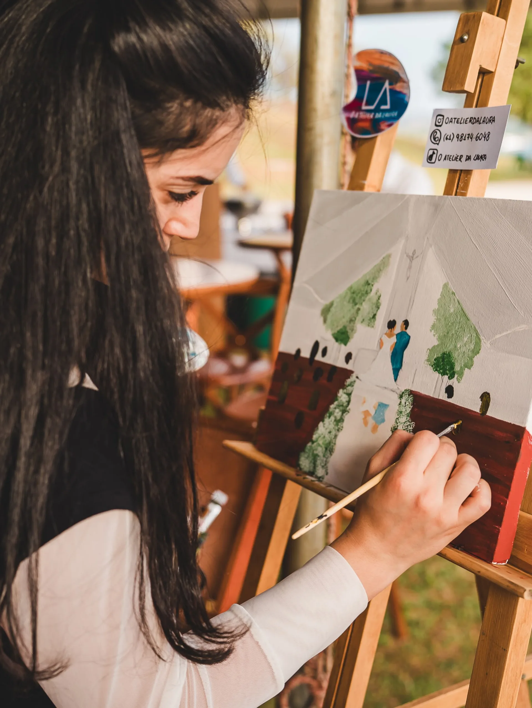
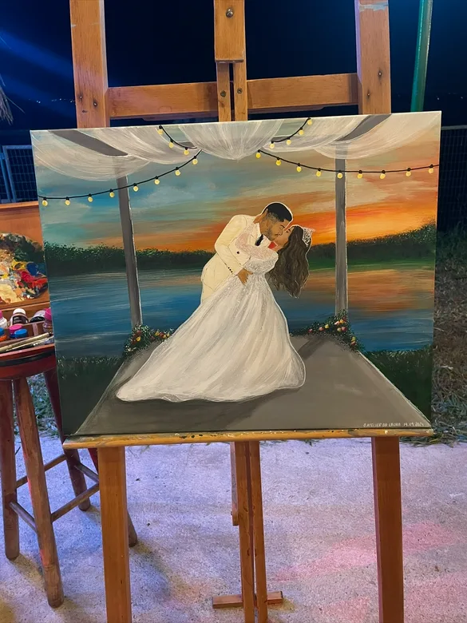
Quem já viveu
“Quero exaltar a beleza dessa pintura feita ao vivo na cerimônia do nosso casamento. Foi exatamente assim… Laura, você é perfeita no que faz. Vou guardar para sempre.”
Marina Albernaz
“O trabalho do Atelier da Laura é sensacional, totalmente fora da curva. As cores, os traços, perfeito. Muito idêntico ao que eu tinha proposto, e ela ainda acrescenta coisas que melhoram o desenho. Sem palavras.”
Nathan · Savan Store
“Era exatamente isso que a gente buscava, você foi incrível. Parabéns pelo seu talento, nós amamos.”
Carlos & Letícia
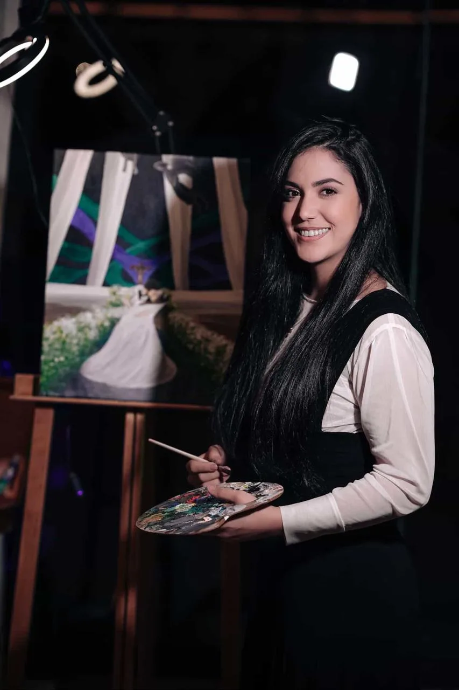
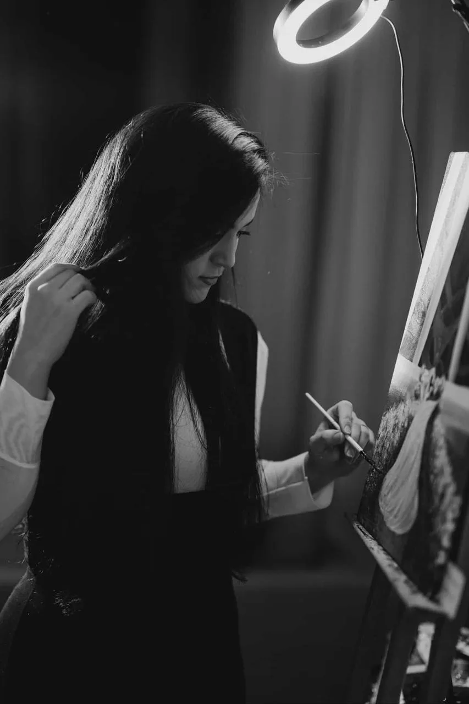
Quem é Laura
Sou Laura. Formada em arquitetura e urbanismo e em design de jogos, premiada em concursos artísticos, e há mais de 14 anos à frente do Atelier da Laura.
A arte sempre foi minha paixão, antes mesmo de eu entender do que ela era capaz. Ao longo dos anos, impactei vidas através do meu trabalho, colhi sorrisos e reações que ficaram marcadas em mim e me incentivaram a continuar.
Sinto orgulho de fazer parte de um momento assim na vida de alguém. Me dedico ao máximo para que vocês sintam, na tela, o amor e o carinho que coloco em cada pincelada.
14+
Anos de atelier
DF
Brasília · atendimento nacional
5h
De pintura ao vivo
Perguntas frequentes
A pintura ao vivo é uma tela pintada à mão durante a própria celebração. No Atelier da Laura, a obra começa na cerimônia e é concluída ao longo da recepção, diante dos convidados.
São cerca de 5 horas de pintura no local, da cerimônia à recepção.
Sim. A tinta acrílica não tem odor forte e seca em cerca de 2 horas, então a tela é entregue em mãos aos noivos ainda na festa.
Sim. O atelier fica em Brasília, no Distrito Federal, e o atendimento é nacional.
O valor depende da data, do local e do tamanho da tela. A Laura envia a proposta pelo WhatsApp, no (61) 98174-6048, depois de conversar sobre a celebração.
O Atelier da Laura também produz murais artísticos, pinturas autorais e arte corporativa.
Conte-me sobre a celebração. Respondo pessoalmente, com uma proposta pensada para a sua data, o seu espaço e a obra que ficará com vocês.
Falar com a Laura no WhatsApp